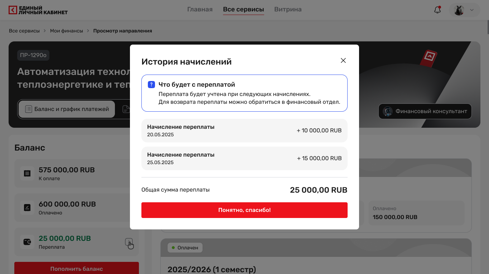
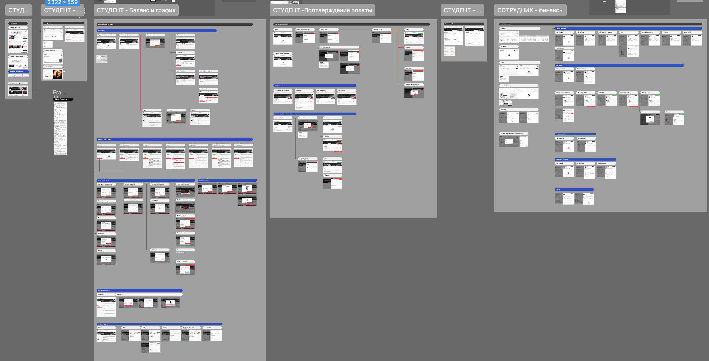
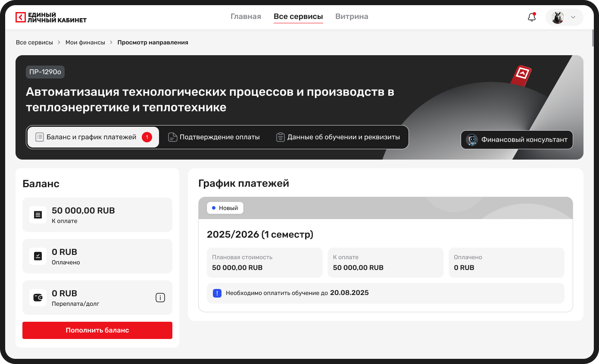
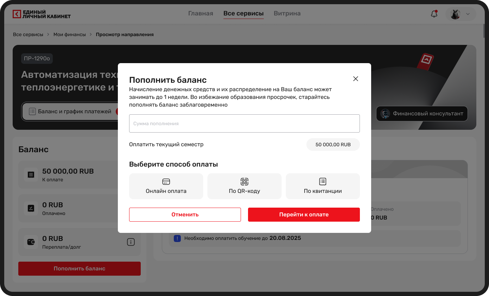
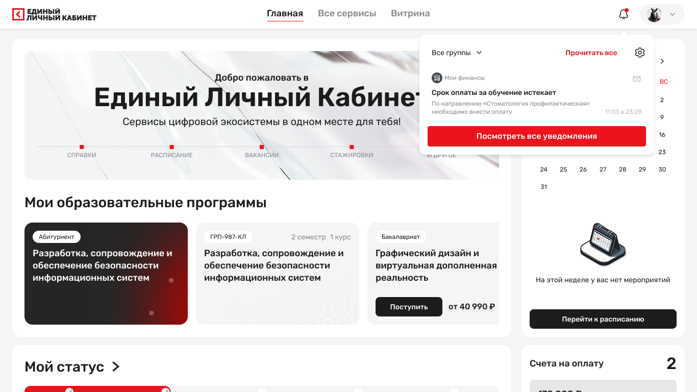
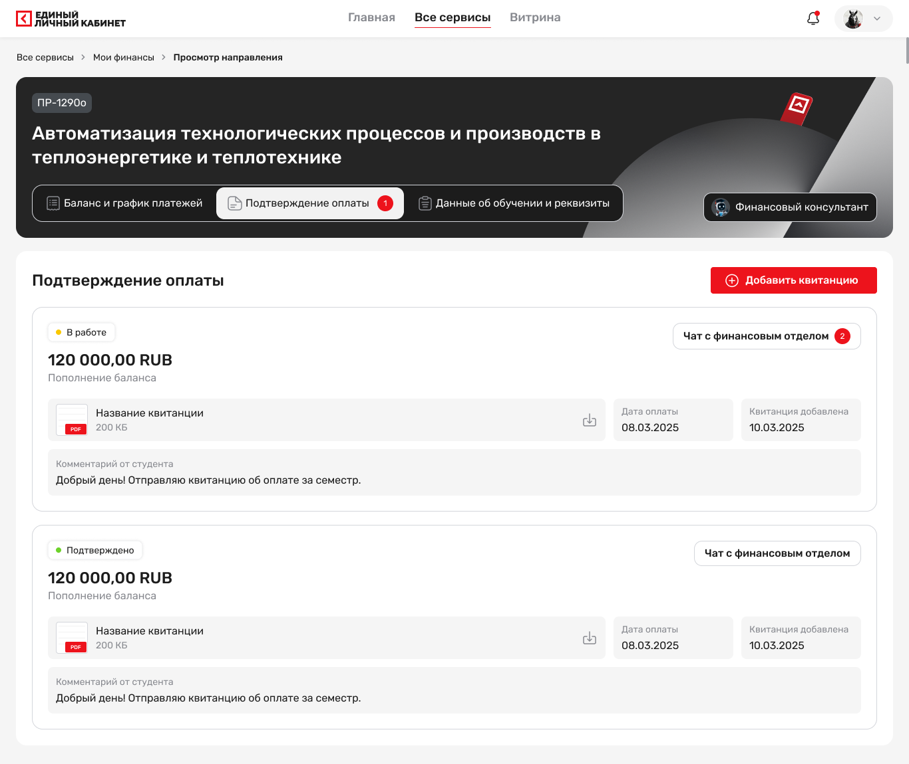

Оплата обучения

Сервис проектировался с нуля. До появления сервиса студенты оплачивали обучение вне личного кабинета: через переписку в мессенджерах со своим куратором.
В пиковый период поступления, с июля по октябрь, финансовые процессы затрагивали от 6 до 10 тысяч пользователей.
Моя роль: продуктовый дизайнер end-to-end. От исследования пользовательских потребностей и проектирования сценариев до проверки решений и передачи макетов в разработку.
💡 Оплата обучения зависела от ручной работы кураторов
Последствия для студентов
Не понимали, сколько и когда нужно платить.
Не могли самостоятельно проверить статус платежа.
Допускали ошибки и просрочки при оплате.
Чтобы разобраться, как устроен процесс оплаты на практике, я провела интервью с пятью студентами. Мне было важно восстановить путь от получения счёта до подтверждения оплаты.
Основные инсайты:
История платежей была разбросана по перепискам. Квитанции и чеки хранились в чатах с кураторами. Единой истории, где студент мог бы посмотреть свои финансовые операции, не было.
Студент не понимал, что происходит с его платежом. После отправки чека оставалось ждать ответа куратора. Было непонятно, учтён ли платёж и нужно ли предпринимать дополнительные действия.
Информация о задолженности была недоступна самостоятельно. Чтобы узнать, есть ли долг и сколько осталось оплатить, студенту приходилось обращаться к куратору или в деканат.
Эти наблюдения показали, что студентам нужен не просто способ оплаты, а полноценный финансовый сервис с историей операций, балансом и понятными статусами.

Дополнительно я изучила платёжные сценарии банковских приложений, Ozon, Яндекса и образовательных платформ. Мне было важно посмотреть, как другие сервисы решают задачи управления деньгами, оплаты и контроля операций.
В качестве ориентиров выделила несколько паттернов:
Предзаполненные суммы с возможностью указать свою
Несколько способов оплаты: банковская карта, QR-код, квитанция
Прозрачные статусы платежей
История операций и подтверждающие документы
Эти паттерны стали основой для дальнейшего проектирования.
На основе исследования я сформировала четыре продуктовые гипотезы.
Способ подтверждения платежа зависит от выбранного способа оплаты.
Банковская карта. Результат онлайн-оплаты передаётся платёжным виджетом в сервис, поэтому статус обновляется автоматически.
QR-код и квитанция. Оплата происходит вне личного кабинета, поэтому студенту необходимо самостоятельно прикрепить подтверждающий документ в разделе оплаты. После этого менеджер проверяет документ и подтверждает статус платежа.
Перед релизом я проверила основные сценарии на тестовой среде.
Участники: 5 студентов (3 студента высшего образования, 1 студент колледжа и 1 магистрант) и 1 куратор. Студенты проходили сценарии онлайн-оплаты и просмотра финансовой информации. Куратор проверял сценарии подтверждения квитанций.
Тестовые задания:
Оплатить счёт за обучение онлайн.
Найти в истории, за что и когда были списаны деньги.
Для куратора: подтвердить квитанцию студента и отклонить неактуальный счёт.
Что я проверяла: время выполнения сценария, успешность выполнения с первой попытки, понимание платёжного процесса. После каждого задания просила участника своими словами объяснить, что происходит с его деньгами и какой следующий шаг ему предстоит сделать.
Студенты путались в терминологии блока баланса и не понимали, как трактовать отдельные суммы. Особенно заметной проблема становилась, когда счёт выставлялся сразу на несколько семестров:
«К оплате» воспринимали как сумму, которую ещё осталось заплатить, хотя на самом деле это была общая сумма начислений
«Оплачено» не всегда считывали как сумму фактически переведённых денег
«Переплата» не воспринимали как остаток средств на кошельке и не понимали, что с ним можно сделать
Сроки релиза были сжатыми, поэтому мы не успевали внести более существенные изменения в структуру и терминологию блока. При этом я добавила пояснения непосредственно в блок переплаты, чтобы студент понимал, как распорядиться остатком:
Вернуть деньги через обращение в финансовый отдел
Сумма переплаты автоматически вычтется из нового начисления
Посмотреть историю операций с переплатой, чтобы отслеживать, как меняется остаток и куда направляются средства
Остальные изменения терминологии и структуры баланса перенесли во вторую итерацию.

На основе исследований и гипотез я спроектировала сервис «Мои финансы», который объединил основные финансовые сценарии студента в личном кабинете.
Статистика техподдержки: количество обращений по теме оплаты до и после запуска
События в личном кабинете: время от открытия счёта до получения статуса «Оплачено»


Единое пространство для управления финансами. Вместо разрозненной информации в переписках студент получил личный финансовый раздел. В нём собраны: баланс, суммы к оплате, информация о задолженности и переплате, история платежей и списаний по счёту, возможность пополнения кошелька. Лицевой счёт работает как кошелёк: студент может заранее пополнять его, хранить средства и использовать их для оплаты обучения.

Онлайн-оплата. Оплата спроектирована непосредственно внутри личного кабинета. Чтобы сократить количество действий и снизить вероятность ошибок: предложенные суммы с возможностью ввести свою, без необходимости самостоятельно вводить банковские реквизиты и назначение платежа, три способа оплаты — банковская карта через платёжный виджет, QR-код для мобильного банка и квитанция для оплаты офлайн.

Уведомления об изменении статусов. Уведомления о ключевых изменения: выставлен новый счёт, оплата подтверждена, счёт стал неактуальным. Каждое уведомление ведёт к соответствующей странице в личном кабинете. Это помогает студенту не пропускать важные изменения и не уточнять статус платежа у куратора.

Благодаря статусам студент может сам проверить, на каком этапе находится оплата, и не обращаться за уточнениями к куратору.
Спроектировала интерфейс куратора для работы с платежами. В нём куратор может просматривать информацию о студенте, проверять выставленные счета и историю платежей, сверять поступившие оплаты и подтверждать их. Это позволило перенести проверку платежей из разрозненной коммуникации в единую систему и сделать процесс прозрачнее для сотрудников.
После запуска я сопоставила целевые показатели с фактическими данными.
Источники данных:
Продуктовая аналитика: доля платежей через сервис от общего количества платежей за обучение
Статистика техподдержки: количество обращений по теме оплаты до и после запуска
События в личном кабинете: время от открытия счёта до получения статуса «Оплачено»
Платёжный процесс переехал из переписки с кураторами в личный кабинет. Теперь студент может самостоятельно посмотреть счёт, оплатить обучение удобным способом, проверить статус платежа и историю операций в одном месте.
Доля платежей через сервис достигла 83%, количество обращений по вопросам оплаты в техподдержку снизилось на 47%, а медианное время оплаты составило 4,5 минуты.
Кураторам и финансовым консультантам больше не приходится вручную отвечать на типовые вопросы о суммах, статусах и подтверждении платежей. Студенты получили самостоятельный доступ к финансовой информации, а сотрудники смогли сократить время на рутинные операции.
Кошелёк стал частью финансового сервиса. Студенты получили возможность пополнять лицевой счёт заранее, хранить средства и использовать их для оплаты обучения. История операций позволяет отслеживать движение денег, включая пополнения и списания.

Конструктор курсов в LMS
1875 курсов создано, 31 подразделение, 73,3% доходят до публикации.

Расписание университета
100 тыс+ пользователей, −70% обращений, 12 000 переходов в онлайн-занятия.
Обучение в LMS
4 итерации от MVP ДПО до университетского цикла с семестрами и пересдачами.

AI-платформа для управления расходами
Дизайн-система с нуля и экраны для сервиса с ИИ-распознаванием чеков.